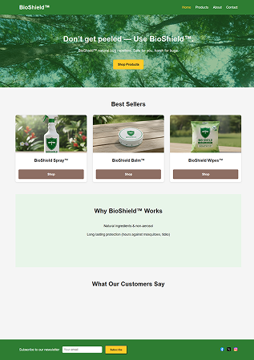
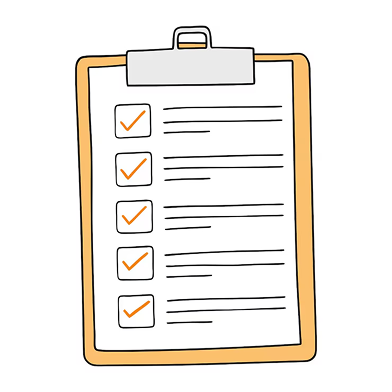

The Tech Stack
Languages:


Tools:


Deployment:

This project is a website I worked on with a partner, meant for a fictional bug repellent brand known as BioShield. The purpose of this project was to develop our skills in researching and creating a product for consumers based on the criteria that they provide. The majority of this site was coded using GitHub Copilot, with the main focus being on web design.



AI literacy: I learned how to implement AI as an assistant in speeding up real-world workflows.
Requirements Analysis: I improved my ability to follow a client’s requirements when designing and developing a product.
My partner and I had no idea where to begin when it came to designing a website for a bug repellent brand.
We researched the websites of real leading bug repellent brands, such as OFF! and Bug Soother, and took notes on what elements would be useful to include in our website.
My partner and I needed to make sure that both of us were on the same page on what requirements we needed for the website and what we would include.
We created a shared document that listed all the features the site would include on each page.
My partner and I were short on time, and we needed to create a website that matched the requirements quickly by the deadline.
We made good use of GitHub Copilot to create a draft of the website by giving it a list of requirements in page structure that we drafted while researching the websites of leading bug repellents. We later modified the result ourselves for fine-tuning to fit our vision.
Communication: While brainstorming and designing this project, I openly communicated and cooperated with my partner, assigning ourselves tasks and sharing ideas, in order to get the project done efficiently.
Adaptability: When my team was short on time on finishing the project, we adapted and utilized GitHub Copilot’s capabilities in order to quickly get a first draft of the website that we later modified to something we liked.